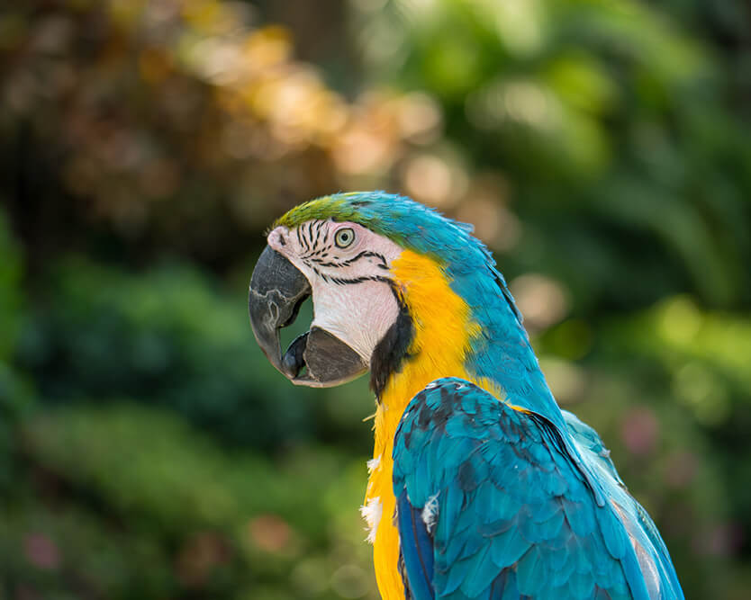

Macaw papağanı (Ara macaw), Güney Amerika’nın tropikal ormanlarında yaşayan ve papağan türleri arasında en ihtişamlı olanlardan biridir. Ortalama 30–90 cm uzunluğa ulaşabilen bu kuşlar, kırmızı, mavi, sarı ve yeşilin en canlı tonlarını taşıyan tüyleriyle doğanın adeta bir sanat eseri gibidir. Güçlü gagaları sayesinde sert kabuklu yemleri kolayca kırabilir, uzun kuyrukları ise uçuş sırasında denge sağlar. Zekâları ve öğrenme yetenekleriyle bilinen macawlar, insan seslerini taklit edebilir ve basit kelimeleri öğrenerek iletişim kurabilir. Sosyal ve oyuncu yapıları sayesinde sahipleriyle güçlü bağlar kurar, ilgi ve etkileşim gördüklerinde mutlu ve sağlıklı bir yaşam sürerler. Doğal ortamlarında meyve, tohum, fındık ve yapraklarla beslenirler; ev ortamında ise dengeli bir diyet ve geniş yaşam alanı gerektirirler. Doğru bakım koşullarında 30 yıla kadar yaşayabilen macaw papağanları, yalnızca görsel ihtişamlarıyla değil, aynı zamanda dostane ve enerjik karakterleriyle de evcil hayvan dünyasında özel bir yere sahiptir. Ayrıca bazı türleri nesli tükenme tehlikesi altında olduğundan, sorumlu sahiplenme ve koruma bilinci bu kuşların geleceği için büyük önem taşır.